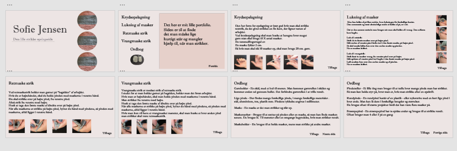

Flow 1 - Drøm din Portfolio
Første drømmeportfolio

Opgavebeskrivelse:
Nu har du muligheden for at skitsere dit første oplæg til et Portfolio i Adobe XD eller lignende prototypeværktøj. Aflever 1 PDF-fil som beskriver og dokumenterer din prototype.
Tilføj et link i PDF'en til en online version af jeres Portfolio (brug Adobe XD's "publish prototype"-link).
Respons fra lærer til re-design:
"Nogle af sætningerne er lidt lange og der er meget tekst.
Det er nogle mørke farver du har valgt, så prøv evt at finde en mere varm og indbydende farve."
Drømme portfolio re-design:
Nye drømmeportfolio

Afhængig af hvilken lærer jeg har snakket med, har jeg misforstået opgaven. Jeg forstod man skulle lave et portfolio om hvad man ville, gerne noget der interesserede en.
Derfor lavede jeg mit portfolio om at strikke.
Jeg har ændret nogle af de lange sætninger så de er nemmere at overskue at læse.
Derudover har jeg ændret farverne. Jeg har ændret den grå til en mere lys så det ikke er så tungt at kigge på.